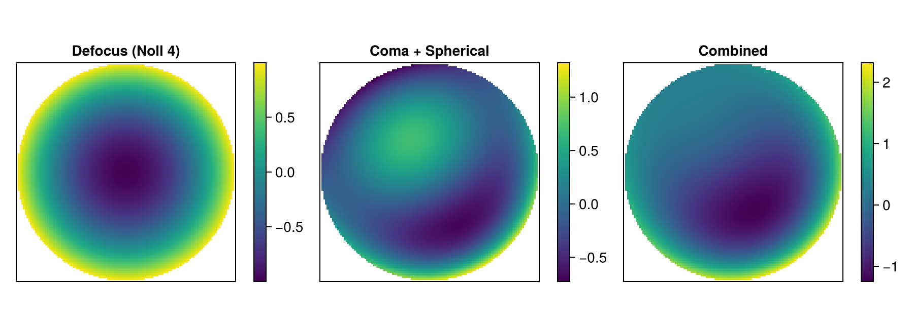

using PhaseBases
using CairoMakie
CairoMakie.activate!(; type="png")Symbolic Zernike Polynomials
In optics, wavefront aberrations are routinely described as a sum of Zernike polynomials. Measurement instruments, specifications, and simulation codes each use their own single-index ordering convention (Fringe, Noll, OSA/ANSI, …) and normalization (Born & Wolf, RMS).
The SymbolicZernikePhase type lets you work with Zernike coefficients without committing to a particular computational grid. Discretization happens later, when you need an actual array — via collect or conversion to ModalPhase.
This tutorial walks through the key features: construction, index conversion, arithmetic, reordering between conventions, and materialization on a grid.
1 — Creating a Symbolic Zernike Phase
Dense constructor
When you have coefficients for consecutive Zernike indices (starting from the convention's first index), pass them as a plain vector together with an ordering singleton:
# 9 Fringe coefficients (indices 1 through 9)
ph_fringe = SymbolicZernikePhase(
[0.02, -0.1, 0.05, 0.8, -0.3, 0.0, 0.1, 0.0, 0.5],
Fringe,
)SymbolicZernikePhase{Float64} — 7/9 nonzero term(s), ordering: FringeOrdering, normalization: BWNormalizationThe object remembers the ordering and the index range:
println("Ordering : ", ph_fringe.ordering)
println("Indices : ", ph_fringe.indices)
println("Coefficients: ", round.(ph_fringe.coef; digits=3))Ordering : FringeOrdering()
Indices : [1, 2, 3, 4, 5, 6, 7, 8, 9]
Coefficients: [0.02, -0.1, 0.05, 0.8, -0.3, 0.0, 0.1, 0.0, 0.5]For OSA/ANSI ordering, which is 0-based, indices start at 0 automatically:
ph_osa = SymbolicZernikePhase([1.0, 0.0, 0.0, 0.5], OSA)
println("OSA indices: ", ph_osa.indices) ## [0, 1, 2, 3]OSA indices: [0, 1, 2, 3]Sparse constructor
Often you only care about specific terms — e.g., "pure defocus" or "coma + spherical". Use the two-argument form (indices, coef):
# Pure defocus in Noll convention (Noll index 4)
defocus = SymbolicZernikePhase([4], [1.0], Noll)
println(defocus)
# Coma + spherical in Fringe convention
coma_sph = SymbolicZernikePhase([7, 8, 9], [0.5, -0.9, 0.3], Fringe)
println(coma_sph)SymbolicZernikePhase{Float64} — 1/1 nonzero term(s), ordering: NollOrdering, normalization: BWNormalization
SymbolicZernikePhase{Float64} — 3/3 nonzero term(s), ordering: FringeOrdering, normalization: BWNormalizationNormalization
By default, coefficients are assumed to be in Born & Wolf normalization (unit amplitude at the aperture edge). You can specify RMS normalization explicitly:
ph_rms = SymbolicZernikePhase([4], [1.0], Noll, RMSNorm)
println("Normalization: ", ph_rms.normalization)Normalization: RMSNormalization()2 — Inspecting Indices: the (n, m) Double-Index Form
Every single-index convention maps to a unique pair of radial order $n$ and azimuthal frequency $m$. Use to_nm to see what physical polynomials your coefficients correspond to:
nm = to_nm(ph_fringe)
for (j, c, nm_i) in zip(ph_fringe.indices, ph_fringe.coef, nm)
println("Fringe $j → (n=$(nm_i.n), m=$(nm_i.m)) coef = $c")
endFringe 1 → (n=0, m=0) coef = 0.02
Fringe 2 → (n=1, m=1) coef = -0.1
Fringe 3 → (n=1, m=-1) coef = 0.05
Fringe 4 → (n=2, m=0) coef = 0.8
Fringe 5 → (n=2, m=2) coef = -0.3
Fringe 6 → (n=2, m=-2) coef = 0.0
Fringe 7 → (n=3, m=1) coef = 0.1
Fringe 8 → (n=3, m=-1) coef = 0.0
Fringe 9 → (n=4, m=0) coef = 0.5You can also convert individual indices without a phase object:
j_to_nm(Fringe, 9) ## (n=4, m=0) — primary spherical(n = 4, m = 0)j_to_nm(Noll, 4) ## (n=2, m=0) — defocus(n = 2, m = 0)nm_to_j(OSA, (n=3, m=-1)) ## OSA single index for vertical coma73 — Reordering Between Conventions
Different instruments report coefficients in different conventions. You can freely convert with reorder:
# Start with Fringe coefficients
ph_f = SymbolicZernikePhase([1, 4, 9], [0.1, 0.8, 0.5], Fringe)
println("Fringe indices: ", ph_f.indices)
# Convert to Noll
ph_n = reorder(ph_f, Noll)
println("Noll indices: ", ph_n.indices)
# Convert to OSA
ph_o = reorder(ph_f, OSA)
println("OSA indices: ", ph_o.indices)Fringe indices: [1, 4, 9]
Noll indices: [1, 4, 11]
OSA indices: [0, 4, 12]The physical polynomials are the same — only the numbering changes. Coefficients are preserved:
println("Fringe coefs: ", ph_f.coef)
println("Noll coefs: ", ph_n.coef)
println("OSA coefs: ", ph_o.coef)Fringe coefs: [0.1, 0.8, 0.5]
Noll coefs: [0.1, 0.8, 0.5]
OSA coefs: [0.1, 0.8, 0.5]Round-trip is exact:
ph_roundtrip = reorder(reorder(ph_f, Noll), Fringe)
println("Round-trip match: ", sort(ph_roundtrip.indices) == sort(ph_f.indices) &&
ph_roundtrip.coef ≈ ph_f.coef)Round-trip match: true4 — Arithmetic
Symbolic phases support the usual operations: negation, scalar multiplication, addition and subtraction.
# Scale an aberration
big_defocus = 3.0 * defocus
println("3× defocus coefs: ", big_defocus.coef)
# Combine aberrations from different sources
# (they can even use different orderings — conversion happens automatically)
total = ph_fringe + defocus ## Fringe + Noll → result in Fringe ordering
println("Combined phase: ", total)
println("Number of terms: ", length(total.coef))
# Subtracting an aberration
diff_phase = total - ph_fringe ## should recover defocus only
println("Remaining terms: ",
[(j, c) for (j, c) in zip(diff_phase.indices, diff_phase.coef) if !iszero(c)])3× defocus coefs: [3.0]
Combined phase: SymbolicZernikePhase{Float64} — 7/9 nonzero term(s), ordering: FringeOrdering, normalization: BWNormalization
Number of terms: 9
Remaining terms: [(4, 1.0)]5 — Materialization: From Coefficients to Arrays
When you're ready to compute, create a ZernikeBW basis on a grid and call collect or construct a ModalPhase:
# Create a Zernike basis on a 128×128 grid, max order 6
zbas = ZernikeBW(128, 6)
# Materialize onto the grid
defocus_arr = collect(defocus, zbas)
coma_arr = collect(coma_sph, zbas)
total_arr = collect(defocus + coma_sph, zbas)
# NaN outside the aperture for clean display
ap = mask(zbas)
fig = Figure(; size=(900, 320))
for (i, (arr, title)) in enumerate(zip(
[defocus_arr, coma_arr, total_arr],
["Defocus (Noll 4)", "Coma + Spherical", "Combined"],
))
ax = Axis(fig[1, 2i-1]; title=title, aspect=DataAspect())
hm = heatmap!(ax, (arr .* ap)'; colormap=:viridis)
Colorbar(fig[1, 2i], hm; width=12)
hidedecorations!(ax)
end
rowsize!(fig.layout, 1, Aspect(1,1))
fig
You can also convert to a ModalPhase for further decomposition-based operations:
mp = ModalPhase(defocus, zbas)
println("ModalPhase coefficients (first 6): ", round.(mp.coef[1:6]; digits=4))ModalPhase coefficients (first 6): [0.0, 0.0, 0.0, 0.0, 1.0, 0.0]Ordering invariance
The same physical polynomial gives the same array whichever convention names it, but the same index can mean different polynomials in different conventions:
# Index 4 is defocus (n=2, m=0) in all three conventions
arr_fringe4 = collect(SymbolicZernikePhase([4], [1.0], Fringe), zbas)
arr_noll4 = collect(SymbolicZernikePhase([4], [1.0], Noll), zbas)
arr_osa4 = collect(SymbolicZernikePhase([4], [1.0], OSA), zbas)
println("Fringe 4 ≈ Noll 4: ", arr_fringe4 ≈ arr_noll4)
println("Fringe 4 ≈ OSA 4: ", arr_fringe4 ≈ arr_osa4)
# Index 5 is *not* the same polynomial everywhere:
# Fringe 5 and OSA 5 are (n=2, m=2); Noll 5 is (n=2, m=-2)
arr_fringe5 = collect(SymbolicZernikePhase([5], [1.0], Fringe), zbas)
arr_noll5 = collect(SymbolicZernikePhase([5], [1.0], Noll), zbas)
arr_osa5 = collect(SymbolicZernikePhase([5], [1.0], OSA), zbas)
println("Fringe 5 ≈ OSA 5: ", arr_fringe5 ≈ arr_osa5) ## true
println("Fringe 5 ≈ Noll 5: ", arr_fringe5 ≈ arr_noll5) ## falseFringe 4 ≈ Noll 4: true
Fringe 4 ≈ OSA 4: true
Fringe 5 ≈ OSA 5: true
Fringe 5 ≈ Noll 5: false6 — Summary
| Feature | Function / Type |
|---|---|
| Create symbolic phase | SymbolicZernikePhase(coef, ordering) |
| Sparse construction | SymbolicZernikePhase(indices, coef, ordering) |
| Inspect (n,m) pairs | to_nm(ph) / j_to_nm(ordering, j) |
| Convert convention | reorder(ph, new_ordering) |
| Arithmetic | +, -, * (scalar) |
| Evaluate on grid | collect(ph, basis) |
| Convert to ModalPhase | ModalPhase(ph, basis) |
| Ordering singletons | Fringe, Noll, OSA, Mizer |
| Normalization tags | BornWolf, RMSNorm |
This page was generated using Literate.jl.